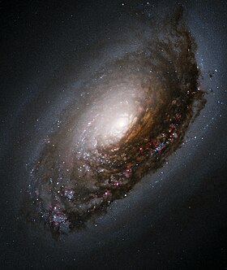

GUIA DAS GALÁXIAS

Galáxia de Olho Negro
Descrição
A galáxia do Olho Negro (Messier 64, NGC 4826) é uma galáxia espiral localizada
a aproximadamente dezessete milhões de anos-luz (cerca de 5,2 megaparsecs) de distância
na direção da constelação da Cabeleira de Berenice.
Dados Interessantes
- Os cientistas acreditam na hipótese de que ela seja o resultado de colisão entre duas galáxias
- A galáxia espiral foi descoberta por Edwar Pigott em 23 de março de 1779
- Pode ser vista com bons binóculos
Outras galáxias:
Andrômeda , Grande Nuvem de Magalhães